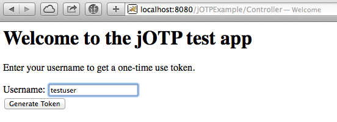
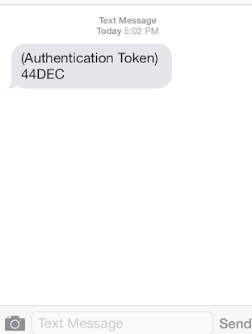

OWASP jOTP Overview
IMPORTANT: These instructions are only applicable for 1.x versions of jOTP. Later major versions use a different API and are configured differently.
What is OWASP jOTP?
OWASP jOTP is a one-time-use token service. In a nutshell, it's a backend application that applications can use to achieve stronger end-user authentication. For example, suppose that you have a high-risk web application. While you will want to protect this app with username / password authentication, many would argue that this isn't enough; passwords can be stolen from databases, shared with others, or extracted from unencrypted network traffic. For this reason, it's frequently useful to have an additional, unrelated and unpredictable factor that helps an application verify that a user is who he says he is.
Enter jOTP. This web service resides in your backend infrastructure and waits for an application to request a random token. When a request comes in, jOTP will automatically send the token via text message or email to the end user, and keep the token in memory for a pre-configured amount of time. When the user enters the token that he received into the client application, it will subsequently make a call to jOTP to verify that it is still valid. If so, and if all other factors are valid as well, the end-user can be authenticated successfully.
For a short jOTP and sample application walkthrough, see the jOTP Tutorial.
An Example Use Case
Suppose that this is the application you want to protect with multifactor authentication (of course, yours will be much prettier, right?) The first page the user will see prompts him to enter his username and click a "Generate Token" button:

After the "Generate Token" button is clicked, the application does an internal lookup (against a backend directory or database) to determine what the user's phone number is. Assuming the user was real, the application will issue a request to jOTP for a one-time-use token to be sent to his phone. Shortly after, the user receives a text message with this token:

Once this token has been received, the user can enter it into the subsequent web form (shown after clicking the "Generate Token" button on the first.) This form requests that the user enters his primary password, as well as the temporary token from jOTP. Note that these are both shown in cleartext below for clarity in this example; normally, these would mask the user's input.

If all goes well and the time elapsed between when the token was generated and when it was entered into the second login form hasn't exceeded the maximum time in the jOTP configuration, the user will be logged in successfully:

If, however, the user entered the wrong password or jOTP authentication token, he will be redirected to a "login failed" page: